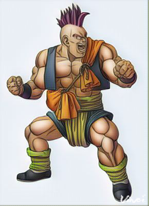
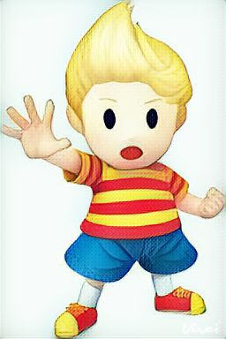
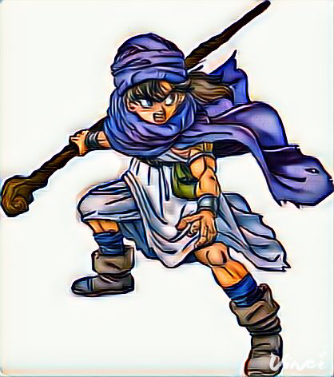
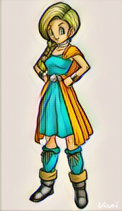
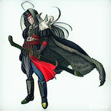
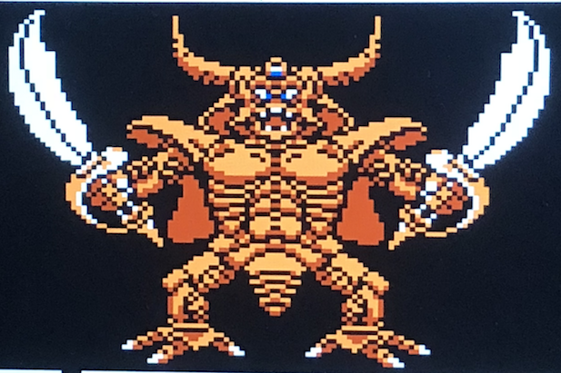
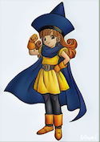
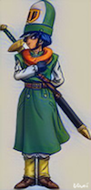

Luigi

Unlike most of the Nintendo characters, my first time playing as Luigi was not in a Smash Bros. series,
but in Super Mario Bros. 2, on the NES. He was one of the first characters I used in Super Mario
Bros. 2, and I have always liked playing as him. And in some games, like Mario Superstar Baseball,
he usually comes up big for me, so he is usually on my baseball's team final roster, as he can do
everything in baseball that I need him to do. He was also one of my favorites in Mario Sports Mix,
especially in dodgeball, because his special is to use the vacuum cleaner to suck up the enemy, and
then he throws the ball at them.
Captain Falcon

This a character that I first knew threw Smash Bros. 64, and he is always one of a few characters I love
to use in mnay Smash games. Shame that I have never played an F-Zero game (outside of demo of SNES
version), but even without playing those games, I have always had such fond memories playing as him
in Smash because I would almost always use him when I was young (if I unlocked him). I always thought he
said "Welcome! Punch!" when doing his iconic Falcon Punch. He learned some new moves in new Smash games,
but his showoff "Show Me Your Moves" and his funny personality (especially in Super Smash Bros. Brawl)
always has been special.
One of my favorites moments where you have to use him is in Smash Bros. Melee, event match 33, where
Captain Falcon is on "steroids", and you have to reach the finish line, where time goes fast, and the
cars, if they hit you, is pretty much you are dead. He is also hindered by horrible jumping, so
sometimes his increased speed is not always the best thing. I am terrible at this event, but I still
enjoy it a lot.
Carver
I couldn't get better pictures of Carver.
Dragon Quest 6 is not my favorite Dragon Quest game, but one of the characters I really enjoyed in this
game was Carver. What makes Carver is awesome is that he is incredibly strong, will take hits for you,
very loyal, and admit his flaws (like his lack of understanding directions). Because there is party chat
in this game, you get to understand Carver a lot more. He is really funny, but there are moments where
you, as a player, are like, "You moron!" However, one of my favorite moments is when he build the house
for a dwarf, and he built it the house in like 30 seconds even though he is not exactly as fast character.
My first game that I have heard of Carver is Fortune Street, but that is a board game, where
the gameplay is usually the same for every character (as long as you play as them), so that doesn't truly
count as me playing as him.
Ness

Another character where I first played or known him from Super Smash Bros. on the Nintendo 64. However,
he is one of my main in Super Smash Bros. 64, Melee, and Wii U. I find his movesets to be interesting
because he never learns PSI Fire (he calls it PK instead of PSI) or Thunder in Earthbound. It took me
playing Earthbound and learning more about the game to understand why he learns those moves (though I
still to this day don't understand why he uses Starstorm instead of Rockin, as he doesn't learn
Starstorm in Earthbound, but Rockin is his serious damaging move).
However, Ness is an interesting silent protagonist, and the adventure he goes through in Earthbound is
something I love the game even more the more times I play it. Everytime I start a new game of Earthbound,
I feel like Ness gets a new character trait that I never witnessed the last time I play it. Seriously,
don't play Earthbound for the gameplay (I think it is fine) or story. Play it for the adventure,
the music, the traits, etc.!
Lucas
I couldn't get better pictures of Lucas.
Like with Abel, Lucas was in another game where I had lots of emotions. Lucas's life was not easy. He loves
being with his family, but especially his mom. When his mom, Hinawa, gets killed by a Drago, his life turns upside-down.
His father, Flint, gets thrown into prison for his outbursts (can't blame him), his twin brother, Claus goes on a hunt
to kill the Drago, and his grandpa Alec doesn't help by yelling at Lucas for letting Claus run away, in which
Lucas breaks down and cry (I cried too when you see Lucas break down). Chapter 1 is off to a rough start.
You only see him a couple of times during Chapter 2 and 3. In Chapter 2, when you go to his house as Duster, you see Lucas
is still crying. In Chapter 3, you see him grow up for the first time by rescuing the party. He befriended a baby
Drago, and the baby Drago calls its mother, and she gets revenge on the enemy (Pigmask and the evil Fassad).
Then in chapter 4, he grew up, when almost everyone else in the village became brainwashed (or corrupted) by
the Happy Box, or have their house destroyed by a Lightning Tower. With the help of his dog, Boney, he searches for
Duster, learning PSI, including yhis main PSI (usually, Love alpha). He also befriends Kumatora, who was in
your teams' party for parts of Chapter 2 and 3. Once Duster and Kumatora joins Lucas and Boney, the adventure is just beginning.
Lucas is also searching for Claus.
The first time I heard of Lucas was in Smash Bros. Brawl, and in the Subspace Emissary, they fit his sad
personality perfectly. First, he gets chased by a statue of Pokey (or Porky), and then after he and Ness
beats Pokey, Wario comes in a turns Ness into a trophy. After running away and feeling sad again, he befriends
Pokemon Trainer, but after Pokemon Trainer and Lucas beats Wario and turns him into trophy, Lucas gets horrible
flashback of Wario turning Ness into trophy.
Lucas is one of my favorite characters of all time, because, in terms of JRPG characters, I have not seen
a character who experiences a lot of things, and still be able to grow better than most. Also, with all
the horrible things that happened to him, it could not have been easy to be so good of a human, especially
when everyone but the playable characters, his family, Duster, Kumatora and the monkey, Salsa, are so
mean to him. The village tells him to get over the loss Hinawa and pretty much be corrupted by Fassad
and the army of Pigmasks. He easily could have lost it and just destroy everybody, but playing as him,
I have never seen a character grow so much throughout the game.
Yoshi

Is there anything I can say about my favorite Nintendo character? The first time I remember
playing as Yoshi was on Super Smash Bros. on the Nintendo 64, like most of my favorite
Nintendo characters. While he might not be the best fighter, this green dinosaur ends up being
the character I use a lot in sports games, sometimes even bonus events in the Smash Bros. games.
Also Super Mario World 2 Yoshi's Island is a brilliant game and one of the few non-JRPG or sports
game that I have beaten. He also, in my opinion, is the best player in Mario SuperStar Baseball
because of his speed and his tongue-catching, which makes up for his not so great pitching and
fielding. Whenever I needed someone to step up in the clutch, Yoshi has always been their for me.
Main character and Bianca(I call main character Abel)
 I couldn't get better pictures of Abel and Bianca
I had a hard time putting one over the other, and the reason for that is that Bianca is one of, if not, the
favorite character in the Dragon Warrior series, and Abel has a lot of story in him, and that when you play
as Abel, you have that feeling that you want Abel to have justice. Because of the fact that you can marry
Bianca in this game, I feel like these 2 belong on the same list together.
First time I heard of Bianca was Fortune Street. I like Bianca because she is supportive, but not afraid to
speak out when it matters, like in the case of a sabercat being mistreated. She is also very adventurous
and Abel is not at a huge disadvantage (grinding-wise) if Abel decide to marry her because her levels are higher
to start with than 2 other candidates, Nera and Debora. When Bianca knows about Abel getting married to Nera,
Bianca goes on a trip to help you find 1 of 2 rings Nera's dad wants before anyone gets married to Nera.
And I like Abel because the traumatic life of Abel would be very easy for him
to just not care and either become a slave the rest of his life, or just die in the hands of a powerful
villain. However, he chose to fight through the tough life (understatement of the century) and fight to
find his mom and punish the monsters who destroyed his life from day one. He knows how evil some of the
villains are, while most people don't. When you play through the game, you want to beat the game, for Abel.
Psaro(Necrosaro in NES version)
I couldn't get better pictures of Psaro, and above is his original form.

Talking about Psaro would be spoilers
Alena and Kiryl(Cristo is NES version)
 I couldn't get better pictures of Alena and Kiryl
Just like Dragon Warrior 5 between Abel and Bianca, I had a hard time with putting one over the other, but these 2 are my favorite characters of all time.
The first time I have heard of these 2 is similar to Carver and Bianca, Fortune Street. However, their first game
that they are in is Dragon Warrior 4 on the NES, I have also played the DS Version of this game.
Tsarevna Alena always wanted to be adventurous, but her father wouldn't allow her to, so she would always
break down walls so that she could escape. Kiryl tries to hide his crush on Alena, but he always messes
up. He always says "I meant your father" whenever he states "I'm worried" to Alena. Fortunately for
Kiryl, Alena doesn't realize he has a crush on her, and honestly, I don't think she cares that he has a crush
on her. She does thank him in Dragon Quest Heroes 2 for using Kabuff to not get her punctured by arrows from
enemies, so I think she is grateful a lot. She is usually thinking about fighting and fighting.
In the NES version, once you hit Chapter 5, you can only play as the hero, so other characters, like Alena
and Cristo, is AI controlled, and it matters in this scenario. Alena is so overpowered in this game, just
give her the item to make her attack twice per round as she destroys them very quickly, especially Psaro.
Also because agility affects Defense, she has high enough HP and can takes hit better than you think. I
would probably not beat the NES version without her.
Sticking with the NES version, Cristo learns a lot of amazing spells, but once he learns the Beat/Defeat
spell, he is easily the most maddening character in the game. Usually, the AI can be really smart in this
game, but not Cristo. Once he learns that spell, he just keeps using the instakill spell (unless someone
was really hurt) and more often than not, he misses. He uses them on bosses, who are immune to that spell,
and it takes him a long time to realize it doesn't work. However, him using the instakill spell has become
a running joke, because in Dragon Quest Heroes 1/2 (both games I have not played), when he uses his ultimate move,
it shows him keeps missing while using that spell, before finally hitting for heavy damage, and sometimes
killing them.
In the DS Version, even though Agility doesn't seem to make an impact on Defense, Alena is still a monster
slayer. Nothing truly changes about her.
Kiryl, however, changes greatly, and it is all because you can play as everyone, not just the hero, in
this game. You can use those great spells to use, and you don't have to worry about him casting instakill
spells that miss everytime. Kabuff is an absolutely amazing spell, and I use that a lot in this game. He
is also the character I use most for healing. I guess changing his name from Cristo to Kiryl helps a lot,
huh?